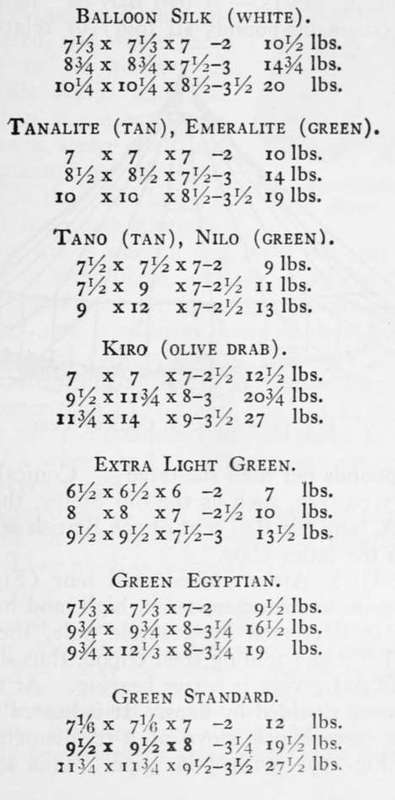
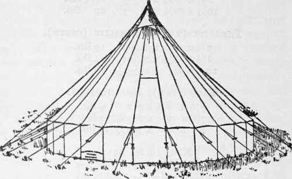
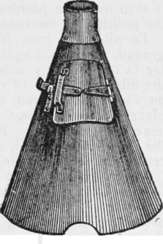

Chapter VI. Types Of Light Tents
Description
This section is from the book "Camping And Woodcraft", by Horace Kephart. Also available from Amazon: Camping and Woodcraft.
Chapter VI. Types Of Light Tents
Local conditions, means of transportation, and sizo of party, are to be considered in choosing among the many tent models that have been designed for campers who travel light. All depends on where you go, when you go, how you go, and what you want to do. The perfect all-round tent is a myth, like the perfect all-round gun. Of one thing, though, be sure: that whatever rig you choose shall be stanch against wind. The utmost pinnacle of comfort is reached when one lies at night under canvas, with a storm roaring toward him through the forest, and chortles over the certainty that no wind can blow his tent down. And it takes just one second of parting guys and ripping cloth to tumble him off his perch and cast him headlong into the very depths of woe.
Light Wall Tents
A wall tent is the favorite cloth shelter of soldiers, engineers, explorers, naturalists, trappers, loggers, and other practical men who live away from civilization a great deal of the time. For one thing, it gives the most head-room for a given amount of material; and that counts, especially in continuous bad weather, or when one comes in wet all over and wants to hang up his clothes to dry. It is the best form of tent if a stove is carried; and that may be necessary in a thinly wooded country, late in the season. The vertical ends permit large ventilators or windows that may be kept open in almost any weather. There is no waste space, as in tents without walls.
Wall tents for flying camps should be much lighter, of course, than those mentioned in Chapter III. In wooded country they are to be set up with shears, as previously described: or, if the ground favors, and a quick set is desired, run a ridge rope from tree to tree, or from a tree to a stake, stretch the guys, and do not bother to pin down the bottom but simply weight the sod-cloth.
Light waterproof wall tents may be had in great variety of sizes and materials, from which the following are selected as examples (width, depth, height, and wall, in order given) :
All of the above-named tents have tape ridges that can be tied to outside poles, and are fitted with sod-cloths.
Smaller, and larger, and intermediate sizes are made; but if a lighter shelter is wanted it is generally best to choose some other shape than a wall tent; and, if a larger one, then use heavier material that will stand up better and endure more strain.
Directions for setting up wall tents are given in Chapter III (see especially Figs. 11, 15).
Conical Tents
A tent may be " light " absolutely (so many pounds all told) or relatively (so many pounds per man sheltered). Conical tents of military pattern, such as the old Sibley, the present U. S. A., and the Bell tent of the British service, belong to the latter class.
Fig. 38. U. S. A. Conical Tent.
The U. S. Army conical wall tent (Fig. 38) is 16 ft. 5 in. in diameter, 10 ft. high, and has a 3-ft. wall. It is erected by a single pole, the butt of which fits into a folding steel tripod, thus shortening the pole and giving it better bearing. At the top is an opening shielded by flaps. It is heated by a bottomless cone-shaped stove of 2-ft. diameter at the bass (Fig. 39) with 5-in. pipe. This stove consumes little fuel. It is fed with sticks stood on end (dry "cow chips" will do), and the draught is regulated by banking earth around the bottom. Such a tent is roomy and comfortable for eight men in any weather. It will shelter a dozen or more at a pinch.
A conical tent is best for a party traveling on the plains, where violent windstorms or cloud-bursts or blizzards may suddenly be encountered, and where there is little or no timber. A cone sheds winds and rain better than any other shape, as it has a steep pitch and equal bracing in all directions. On the other hand, it is not fit for rough grounds; unless the site is smooth and level the tent bottom will gape in some places and sag in others. A conical tent cannot be set up properly without a full set of pegs, and it requires many of them.
Smaller and lighter conical tents are made for^ various tastes; but no tent of this shape should be of less diameter than 13 feet with wall, or 14 feet without one; for the occupants are supposed to lie like spokes of a wheel, and their feet must not come too near the center pole.
The army conical wall tent is usually pitched by eight men, of whom the director is designated as No. 8. They work as follows:
Upon the hood lines of the tent are placed three marks; the first about 8 feet 3 inches, the second about 11 feet 3 inches, the third about 14 feet 2 inches from the hcod ring; the first marks the distance from the center to the wall pins, the second to the guy pins, and the distance between the second and third is the distance between guy pins. These distances vary slightly for different tents and should be verified by actual experiment before permanently marking the ropes. To locate the position of guy pins after the first, the hood ring being held on the center pin, with the left hand hold the outer mark on the pin last set, with the right hand grasp_ the rope at the center mark and move the hand to ihe right so as to have both sections of the rope taut; the center mark is then over the position desired; the inner mark is over the position of the corresponding wall pin.
Fig. 39. Sibley Tent Stove.
To pitch the tent, No. i places the tent pole on the ground, socket end against the door pin, pole perpendicular to the company street. No. 2 drives the center pin at the other extremity of the pole. No. 3 drives a wall pin on each side of and 1 foot from the door pin. No. 4 places the open tripod flat on the ground with its center near the center pin. The whole detachment then places the tent, fully opened, on the ground it is to occupy, the center at the center pin, the door at the door pin.
Continue to: